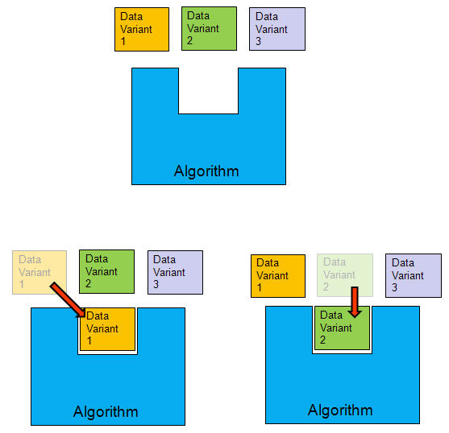
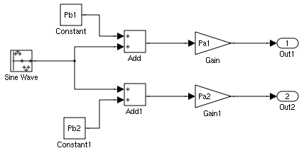
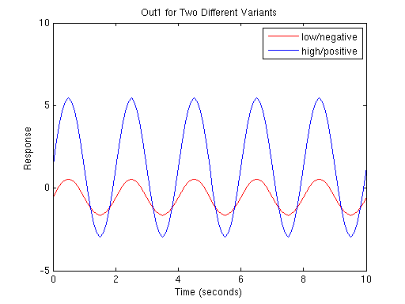
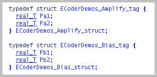
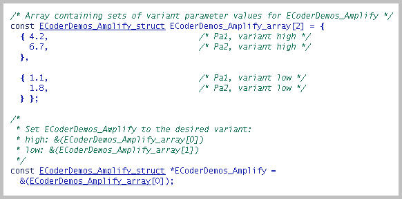
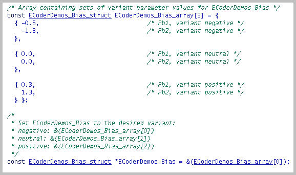
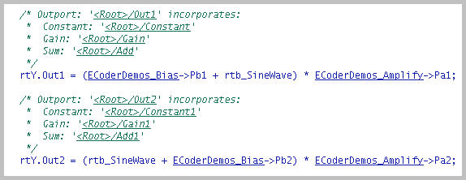

Using Custom Storage Classes for Data Variants
This demonstration explains how to use custom storage classes within Real Time Workshop Embedded Coder to create data variants. This technique allows one software build to handle situations where the code is the same but the data is different, reducing your need to build and stock different part numbers for embedded systems. The top part of the figure below shows an algorithm as a component into which you can plug one member from a collection of various sets of data. In the bottom part of the figure, two different data sets plug into the algorithm.

During the simulation, the model uses the parameter variant values that are active. For code generation, all values are generated into the code as an array of structures. The element of the array corresponding to the selected variant is cached in a pointer, typically when the application starts, and all references to the parameters values are through that pointer. For many applications, the variant selection criteria come from some information source that is extrinsic to the software, such as a wiring harness or a network message.
Contents
Creating Classes for Specifying Parameters with Variant Values
Suppose you want to create a class to represent signal amplification, and that the parameters of this class should have a low value and a high value. Run the supplied demo utility rtwdemo_param_variants_create_variant to create your own variant parameter classes using the syntax
rtwdemo_param_variants_create_variant(package, class, variants)
where the arguments have the following meaning:
- package is a string that is the name of your data package.
- class is a string that is the name of your data class.
- variants is a cell array of strings that define the variants for that data.
For example, in the case of the class representing signal amplification, we created the class ECoderDemos.Amplify using the command:
rtwdemo_param_variants_create_variant('ECoderDemos', 'Amplify', {'low','high'})
The utility creates two classes: the data class specified, and a subordinate variants class. You can examine and even extend your newly created classes using the Simulink Data Class Designer.
Now suppose you want to create a class to represent signal bias, with variants negative, neutral, and positive. Use the utility again, for example:
rtwdemo_param_variants_create_variant('ECoderDemos', 'Bias', {'negative','neutral','positive'})
The utility also creates a ParamVariant custom storage class for the specified package. Launch the Custom Storage Class Designer if you want to examine the specification of this custom storage class.
After creating the classes, you must exit and restart MATLAB.
Defining Data Objects to Specify Variants
You can define variant data objects from the command line:
Pa1 = ECoderDemos.Amplify; Pa1.Variants.low = 1.1; Pa1.Variants.high = 4.2; Pa2 = ECoderDemos.Amplify; Pa2.Variants.low = 1.8; Pa2.Variants.high = 6.7; Pb1 = ECoderDemos.Bias; Pb1.Variants.negative = -0.5; Pb1.Variants.neutral = 0.0; Pb1.Variants.positive = 0.3; Pb2 = ECoderDemos.Bias; Pb2.Variants.negative = -1.3; Pb2.Variants.neutral = 0.0; Pb2.Variants.positive = 1.3;
You must also set the Value of the each object before simulation or code generation. The value for a class of data should be set consistently to one of the variants. You can do this manually, for example:
Pa1.Value = Pa1.Variants.low; Pa2.Value = Pa2.Variants.low; Pb1.Value = Pb1.Variants.negative; Pb2.Value = Pb2.Variants.negative;
Alternatively, you can write a script for this initialization. For example, the script rtwdemo_param_variants_set_value collectively sets all objects of a data class:
rtwdemo_param_variants_set_value('ECoderDemos.Amplify', 'low'); rtwdemo_param_variants_set_value('ECoderDemos.Bias', 'negative');
Using the Variant Data in Simulation
After setting the values of the variant data, you can use the data in a model. Simply refer to the variant data objects as you would a Simulink.Parameter object. To see a demonstration, open the model rtwdemo_param_variants_model.
rtwdemo_param_variants_model sim('rtwdemo_param_variants_model') yout1 = yout; rtwdemo_param_variants_set_value('ECoderDemos.Bias', 'positive'); rtwdemo_param_variants_set_value('ECoderDemos.Amplify', 'high'); sim('rtwdemo_param_variants_model') yout2 = yout; figure('Tag','CloseMe'); plot(tout, yout1(:,1), 'r-', tout, yout2(:,1), 'b-') title('Out1 for Two Different Variants'); ylabel('Response'); xlabel('Time (seconds)'); legend('low/negative','high/positive') axis([0 10 -5 10]); 
Generating Code for the Model That Uses Variant Data
Now you can generate code for the model using variant data. When you use the template TLC file as-is, the code exhibits characteristics shown in this demo.
First, MODEL.h contains typedefs for the variant data. A struct typedef is declared for each class of variant data, and the elements of each typedef correspond to the parameters of that class.

Next, for each class of variant data, a C file is generated that contains:
- an array corresponding to all potential values of the data of that class.
- a pointer to that array, through which the values of the active variant will be accessed
The generated code nominally initializes the pointer to the first element of the array, corresponding to the first variant for that data class. The comments explain how to initialize the pointer in order to select an arbitrary variant; add that initialization code to your application code and invoke it prior to calling the model initialization code.


Finally, pointers provide access to the parameter values:

Close the model, figure, and workspace variables from the demo:
bdclose('rtwdemo_param_variants_model') close(findobj(0,'Tag','CloseMe')); clear Pa1 Pa2 Pb1 Pb2 tout yout yout1 yout2